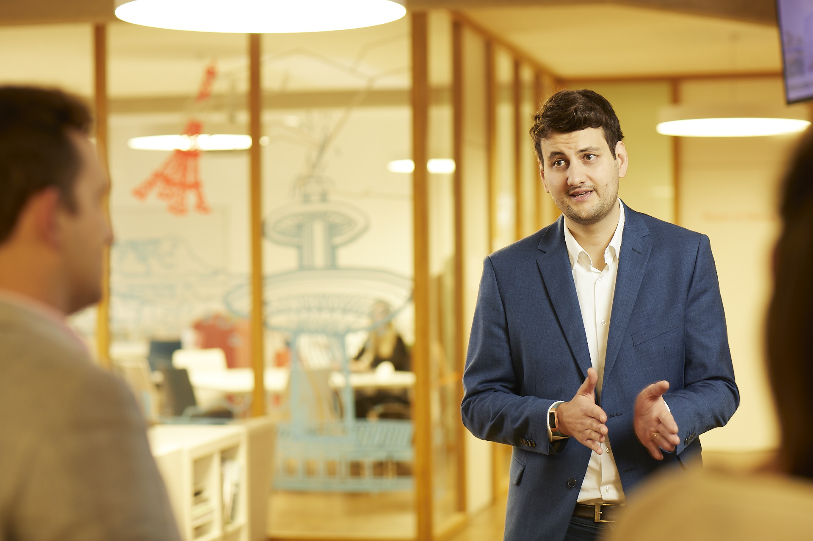
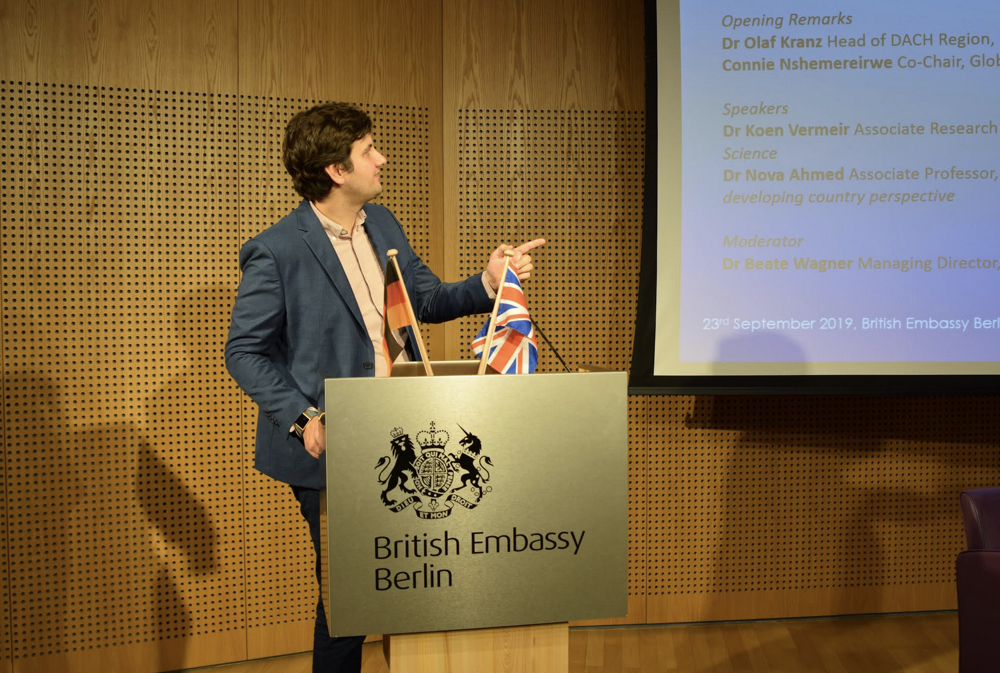

Professor Dr. · University President · Political Scientist
Building institutions that work,
theorising why they fail.
Political scientist, institutional philosopher, and among the youngest university presidents in Germany. Two decades at the intersection of governance, sustainability, and the public role of knowledge — from Oxford to Yale, from the seminar room to the public square.
I am a university president, political scientist, and public intellectual working at the intersection of institutions, norms, and public policy. My research spans trade justice, behavioural science, sustainability governance, and the politics of global indicators — unified by a single question: when do institutions serve people, and when do they fail them?
Trained at Oxford, the London School of Economics, the Hertie School of Governance, Yale, and the European University Institute, I bring both scholarly rigour and executive experience to questions that conventional disciplines struggle to hold simultaneously.
Since 2022 I have served as President of Karlshochschule International University in Karlsruhe — one of Germany's youngest university presidents, leading a complete transformation of academic portfolio, governance, and financial structure.
I believe that the divide between scholarly work and public consequence is neither necessary nor desirable. Science communication is civic infrastructure. Which is why, alongside journal articles and policy briefs, you may also find me on ZDF, SPIEGEL, or TikTok.
Before academia, I completed civilian service in Santa Cruz de la Sierra, Bolivia — working in orphanages and prisons. It shaped a career-long interest in institutions that either fail or protect the most vulnerable.

"The central problem of our time is not a shortage of knowledge — it is a shortage of institutions capable of using it wisely."

British Embassy Berlin · September 2019
For speaking engagements, media enquiries, advisory roles, or academic collaboration.